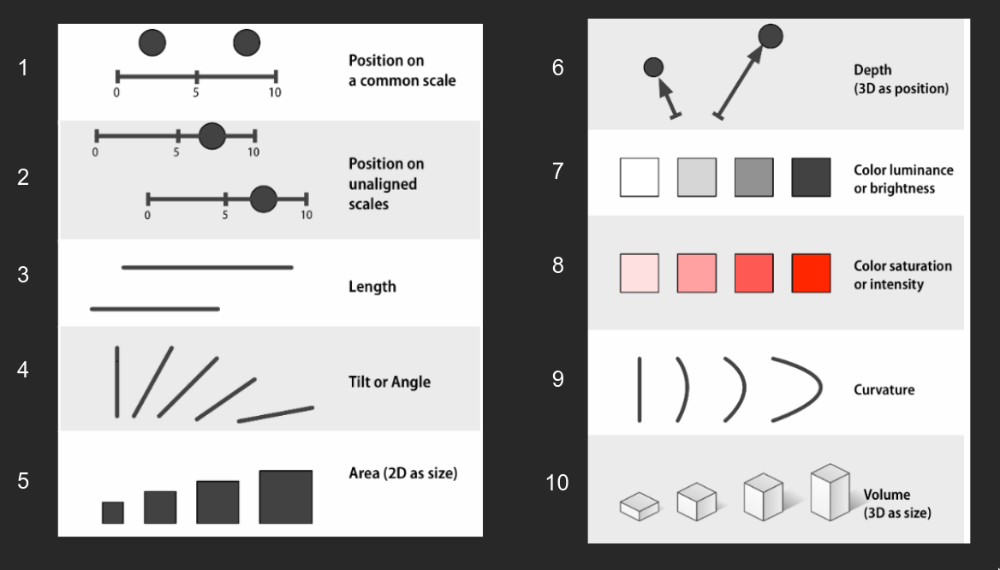
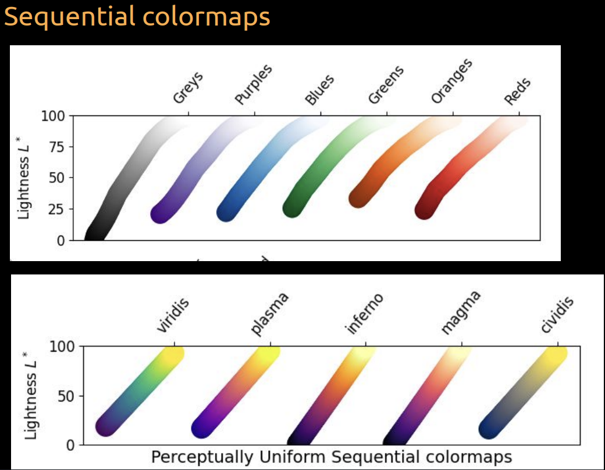
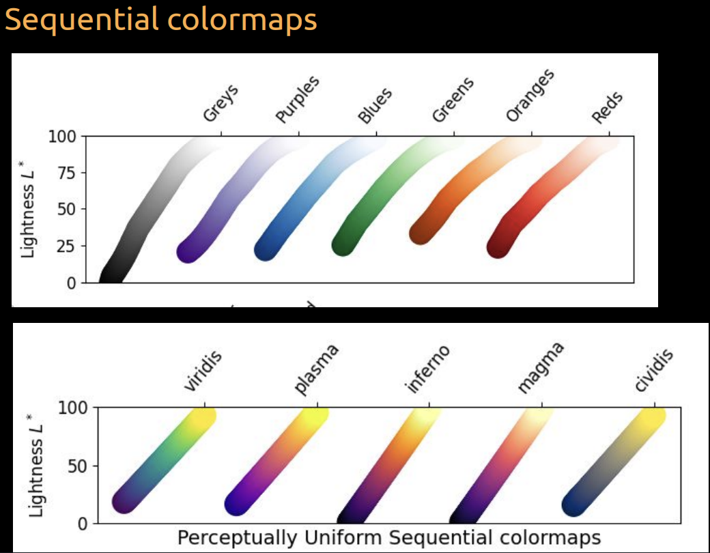
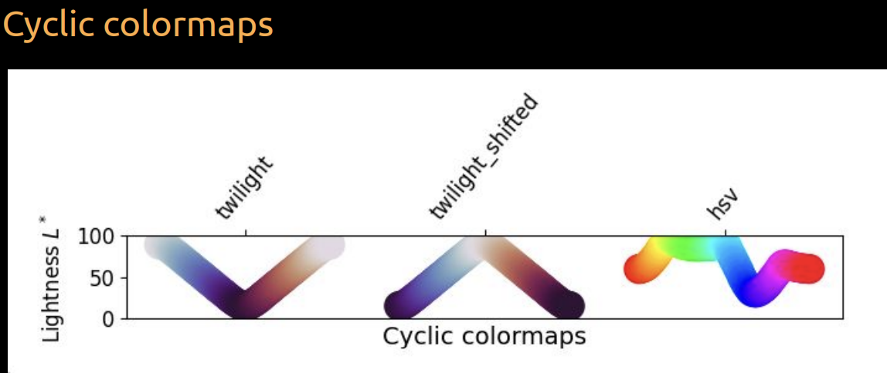
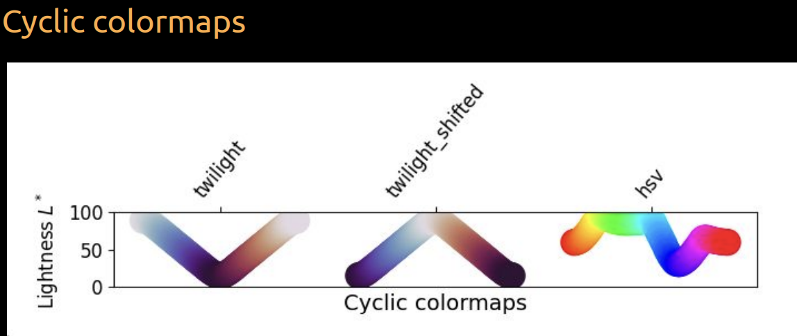

Data Visualization
Intro to Data Visualization
Easier to understand data when it is visualized
Anscombe’s quartet: 4 datasets with the same mean, variance, correlation, and linear regression line but look very different when plotted
We are using high-level declarative (altair, ggplot) instead of low-level imperative (matplotlib)

Plotting in Python (Altair)
- grammar:
alt.Chart(data).mark_type().encode(x,y).properties() - example gallery: https://altair-viz.github.io/gallery/index.html
import altair as alt
# to unlimit the number of rows displayed (5000 by default)
alt.data_transformers.enable('vegafusion')
alt.Chart(cars, title="My plot title").mark_line(opacity=0.6).encode(
x=alt.X("Year:T"), # encoders
y=alt.Y("mean(Miles_per_Gallon)"), # same as doing `y=cars.groupby('Year')['Miles_per_Gallon'].mean()`
color=alt.Color("Origin"),
).facet(
"region",
columns=2, # number of columns in the facet
)different mark_types
| Mark Type | Description | Example Use Case |
|---|---|---|
mark_area |
Filled area plots. | Display quantitative data over an interval. |
mark_bar |
Bar charts. | Compare discrete categories or time intervals. |
mark_circle, mark_square, mark_geoshape |
Geometric shape marks. | Visualize point data in 2D space (circle, square) or geographic regions and shapes (geoshape). |
mark_line |
Line charts. | Show trends over a continuous domain. |
mark_point |
Scatter plots with customizable point shapes. | Visualize point data with various symbols. |
mark_rect |
Rectangular marks, used in heatmaps. | Display data in 2D grid-like structures. |
mark_boxplot |
Boxplots. | Summarize data distribution with quartiles. |
- no violin plot but can do
mark_circlewith y and color the same variable and size as count(). - pandas explode
df.explode()to explode a column of lists into multiple rows
alt.X, alt.Y, alt.Color, alt.Size, alt.Shape, alt.Opacity
alt.X("Year:T")is the same asalt.X("Year", type="temporal")- can do
alt.X().scale()to change the scale of the axis.stack()to stack the axis.scale()to change the scale.scale(type="log")to change to log scale.scale(range=(0, 100))to change the domain.scale(zero=False)to not include 0 in the domain
.bin()to bin the axis, makes histogram if used onmark_bar()- default: stack=True
- takes in binwidth or maxbins
.sort()to sort the axis- .sort(“x”) to sort by x (ascending)
- .sort(“-x”) to sort by x (descending)
.title(""): change the title of the axis
Encoders
| Data Type | Shorthand Code | Description |
|---|---|---|
| quantitative | Q | a continuous real-valued quantity |
| ordinal | O | a discrete ordered quantity |
| nominal | N | a discrete unordered category |
| temporal | T | a time or date value |
| geojson | G | a geographic shape |
https://altair-viz.github.io/user_guide/encodings/index.html#encoding-data-types
Repeated Charts
alt.Chart(movies).mark_point(opacity=0.3, size=10).encode(
alt.X(alt.repeat('row')).type('quantitative'),
alt.Y(alt.repeat('column')).type('quantitative')
).properties(
width=200,
height=200
).repeat(
column=['runtime', 'revenue', 'budget'],
row=['runtime', 'revenue', 'budget']
)Correlation plot
corr_df = (
movies
.corr('spearman', numeric_only=True)
.abs() # Use abs for negative correlation to stand out
.stack() # Get df into long format for altair
.reset_index(name='corr')) # Name the index that is reset to avoid name collision
alt.Chart(corr_df).mark_circle().encode(
x='level_0',
y='level_1',
size='corr',
color='corr'
)Plotting in R (ggplot2)
- grammar:
ggplot(data, aes(x, y)) + geom_type() + facet_wrap() + theme()
read_csv(url) |>
ggplot(aes(x = Year, y = Miles_per_Gallon, color = Origin)) +
geom_line(stat = "summary", fun = mean, alpha = 0.6) +
# stat_summary(geom = "line", fun = mean) # alternative way of doing the same thing
facet_wrap(~ region, ncol = 2) +
# properties
ggtitle("My plot title") +
labs(x = "Year", y = "Miles per Gallon")- in ggplot, fill and color are different
- fill is the color of the inside of the shape (bars, area, etc.)
- color is the color of the outline of the shape (points, lines, etc.)
different geom_types
| Geom Function | Description | Example Use Case |
|---|---|---|
geom_area |
Filled area plots. | Display quantitative data over an interval. |
geom_bar & geom_col |
Bar charts. | Compare discrete categories. geom_col is a special case of geom_bar where height is pre-determined. |
geom_point, geom_tile, geom_polygon |
Geometric shape marks. | geom_point for scatter plots, geom_tile for heatmaps, and geom_polygon for custom shapes. |
geom_line |
Line charts. | Show trends over a continuous domain. |
geom_smooth |
Adds a smoothed conditional mean. | Fit and display a trend line for scattered data. |
geom_boxplot |
Boxplots. | Summarize data distribution with quartiles. |
geom_histogram |
Histograms. | Display frequency distributions. |
geom_text & geom_label |
Display text and labels. | Annotate plots with text or labeled rectangles. |
geom_jitter |
Points with a small amount of random noise. | Display individual data points without overlap. |
geom_path |
Connect observations in the order they appear. | Display paths or trajectories. |
geom_violin |
Violin plots. | Combine boxplot and kernel density estimation. |
geom_rug |
Marginal rug plots. | Display 1D data distribution on plot margins. |
Ordering
reorder()to reorder the axis
gm2018 %>%
add_count(region) %>%
ggplot(aes(y = reorder(region, n))) + # y is region, reorder by its count (n)
geom_bar()GGally
- Repeated Charts
library(GGally)
GGally::ggpairs(movies %>% select_if(is.numeric), progress = FALSE)- Correlation plot
GGally::ggcorr(movies)Faceting
- Faceting displays groups based on a dataset variable in separate subplots.
- It’s useful for splitting data over additional categorical variables.
- Avoids overloading a single chart with too much information.
- Using color groupings in a histogram can obscure differences between groups.
- Faceting each group in separate subplots clarifies distribution comparisons.
Visual Channel

Visualizing Distributions
Most basic (fast to make)
shows only 1 value of distribution, can show 3 with error bars:
- Dot plots
- Bar plots
A bit better
- box plots: normally shows 5 values (min, max, median, 25th percentile, 75th percentile)
- Histograms
- cons: binning required and distribution sensitive to bin settings
- KDE
- shows density of data points
- gives a smooth curve because uses “gaussian” (default) centered at each data point
- No binning required (not sensitive to bin width or bin location)
- less affected by sparse data
- cons: y-axis is density, not count (hard to interpret)
- Violin plots: mirror of density estimates (KDE)
- more would show higher density, unlike box plots (smaller box plots would show higher density)
- cons: over-smoothing of data (when too little data points)
Showing all data
scatter plots: shows all data points (can overlap and saturate)
jitter plots: scatter plots with jittering over a small width in y-axis
raincloud plots: violin plots with jittering
Plotting Density
Python: Plotting density in Altair
alt.Chart(df).transform_density('x', as_=['x', 'density']).mark_area().encode(x='x:Q', y='density:Q')alt.Chart(df).explode('col_name'): explode a column (of list normally) into multiple rows
Visualization for Communication
Some notes
- same data can give different messages
- keep same color mapping for same categories across plots
- labels horizontally > vertically
- Pie charts aint it when:
- categories > 3
- comparing > 1 pie charts
- Don’t have too many lines in a line chart
- unless you gray out the lines and highlight the one you want to show
Overplotting
- Too many points in a plot
- Some solutions:
- lower size
- lower opacity (alpha in ggplot)
- If you have too many points, you can use a heatmap
- ggplot:
gromm::geom_bin2d(bins=40)orgromm::geom_hex(bins=40)- hex is preferred because better granularity
- ggplot:
- match group colours in different charts
ggplot(diamonds) +
aes(x=carat, y=price) +
geom_hex(bins=40)- altair:
alt.Chart(diamonds).mark_rect().encode(
alt.X('carat', bin=alt.Bin(maxbins=40)),
alt.Y('price', binsalt.Bin(maxbins=40)),
alt.Color('count()'))Axes Formatting
- Python Altair:
# clip=True to remove points outside of the plot axis
alt.Chart(diamonds,
title='Diamonds',
subtitle='Price vs. Carat'
).mark_rect(clip=True).encode(
alt.X('carat',
bin=alt.Bin(maxbins=40),
title='Carat', # set the axis title, blank if no title
scale=alt.Scale(domain=(0, 3)), # set the axis extent
reverse=True # reverse=True to flip the axis (largest value on the left)
# axis=None # remove the axis (no labels no titles)
),
alt.Y('price',
binsalt.Bin(maxbins=40),
title='Price',
scale=alt.Scale(domain=(0, 2000)),
axis=alt.Axis(format='$s') # set the axis format 1000 -> $1.0k
),
alt.Color('count()'))- R ggplot:
ggplot(diamonds) +
aes(x=carat, y=price) +
geom_hex(bins=40) +
scale_x_continuous(
limits=c(0, 3),
expand=c(0, 0)) + # expand=c(0, 0) to remove padding [c(mult, add)] for both sides
scale_y_continuous(
limits=c(0, 2000),
trans="reverse", # to flip the axis
labels=scales::label_dollar()) + # to format the axis labels
labs(x="Carat", y="Price", fill="Number", # to set the axis labels
title="Diamonds", subtitle="Price vs. Carat") + # to set the title and subtitle
theme(axis.title.x=element_blank(), # to remove the axis title
axis.text.x=element_blank(), # to remove the axis labels
axis.ticks.x=element_blank()) +# to remove the axis ticks
# theme_void() # to remove everything (no labels no titles)Trendlines
- (Rolling) Mean: average of a subset of data
- to communicate to general public
- Linear Regression: line of best fit
- for extrapolation
points + points.mark_line(size=3).transform_regression( 'Year', 'Horsepower', groupby=['Origin'], method='poly', # 'linear' (default), 'log', 'exp', 'pow', 'quad', 'poly' ) - Loess: linear regression with a moving window (subset of data)
- python:
points + points.mark_line(size=3).transform_loess(
'Year',
'Horsepower',
groupby=['Origin'],
bandwidth=0.8, # 0.3 (default), 1 (max is similar to linear regression)
)- R:
ggplot(cars) +
aes(x = Year,
y = Horsepower,
color = Origin,
fill = Origin) + # fill the CI area around the line
geom_point() +
geom_smooth(se = FALSE,
span = 0.8, # similar to bandwidth
method = "loess") # method = "lm" for linear regressionColor Thoery and Application
- Sometimes need to consider color blindness
- diagram still needs to work in b&w and red-weakened
- Talk in HSV (hue, saturation, value) instead of RGB
- Hue: color
- Saturation: how much color (vibrant/ colourful)
- Value: how bright
Some general rules
- in Altair: `alt.Color(‘species’).scale(scheme=‘dark2’, reverse=True)
- in ggplot:
scale_color_brewer(palette='Dark2')
| Data Type | Variation | Color Map Type | Example |
|---|---|---|---|
| Numerical | Vary value | Sequential (Perceptually uniform) | Number of people (0-100) |
| Categorical | Vary hue | Categorical | Subject (math, science, english) |
| Ordered | Vary hue and value | Not specified | Low, medium, high |
| Cyclic | Vary hue and value | Cyclic | Degrees (0-360) or days of week (0-6) |
| Data with natural center | Not specified | Diverging | Temperature (0-100) |
 

 

- Also consider intuitive colors
- (e.g. red for hot, blue for cold)
Add annotations
- in Altair:
bars = alt.Chart(wheat).mark_bar().encode(
x='year:O',
y="wheat",
color=alt.Color('highlight').legend(None)
)
bars + bars.mark_text(dy=-5).encode(text='wheat')
# Or for line plot
lines = alt.Chart(stocks).mark_line().encode(
x='date',
y='price',
color=alt.Color('symbol').legend(None)
)
text = alt.Chart(stock_order).mark_text(dx=20).encode(
x='date',
y='price',
text='symbol',
color='symbol'
)
lines + text- in ggplot:
ggplot(wheat) +
aes(x = year,
y = wheat,
fill = highlight,
label = wheat) +
geom_bar(stat = 'identity', color = 'white') +
geom_text(vjust=-0.3)
# Or for line plot
ggplot(stocks) +
aes(x = date,
y = price,
color = symbol,
label = symbol) +
geom_line() +
geom_text(data = stock_order, vjust=-1) +
ggthemes::scale_color_tableau() +
theme(legend.position = 'none')Frequency Framing
- people normally judge probabilities wrongly
- Normalize the counts and show each individual count
Error bars
Specify what kind of error bar
- min, max
- std dev
- std error
- 95% confidence interval
in Altair:
points.mark_errorband(extent='ci') # always 95% confidence interval
# good way
err_bars = alt.Chart(cars).mark_errorbar(extent='ci', rule=alt.LineConfig(size=2)).encode(
x='Horsepower',
y='Origin'
)
(err_bars.mark_tick(color='lightgrey') + # show ticks
err_bars + # error bars
err_bars.mark_point(color='black').encode(x='mean(Horsepower)')) # mean as a point- In ggplot: use
Hmisc::mean_cl_boot()
ggplot(cars) +
aes(x = Horsepower,
y = Origin) +
geom_point(shape = '|', color='grey', size=5) + # show ticks
geom_pointrange(stat = 'summary', fun.data = mean_cl_boot, size = 0.7) # error bar + mean as a point
# For line mean and errobar
... + geom_line(stat = 'summary', fun = mean) + # mean as a line
geom_ribbon(stat = 'summary', fun.data = mean_cl_boot, alpha=0.5, color = NA) # error bar as a ribbonStatistical vs practical significance
- Statistical significance: is the difference between two groups statistically significant?
- Practical significance: is the difference between two groups practically significant?
Figure composition
Python
- vertically:
plot1 & plot2oralt.vconcat(plot1, plot2) - horizontally:
plot1 | plot2oralt.hconcat(plot1, plot2) - add title:
(plot1 | plot2).properties(title='title')
R
use package
patchworkvertically:
plot_grid(plot1, plot2, ncol=1)horizontally:
plot_grid(plot1, plot2, nrow=1)Add labels:
plot_grid(plot1, plot2, labels=c('A', 'B'))Set width:
plot_grid(plot1, plot2, rel_widths=c(1, 2))
Interactive visualization
Panning and zooming
- Add
.interactive()to the end of the chart
alt.Chart(cars).mark_circle().encode(
x='Horsepower',
y='Miles_per_Gallon',
).interactive()Details on demand
- Add a tooltip to show details on demand
alt.Chart(cars).mark_circle().encode(
x='Horsepower',
y='Miles_per_Gallon',
tooltip=['Name', 'Origin']
)Interval selection
- Use
alt.selection_interval()to select a range of data points- format:
alt.condition(check, if_true, if_false)
- format:
brush = alt.selection_interval(
encodings=['x'], # only select x axis, default is both x and y
resolve='union' # default is 'global', which means all charts are linked
)
points = alt.Chart(cars).mark_circle().encode(
x='Horsepower',
y='Miles_per_Gallon',
# Use alt.condition to do a selection
color=alt.condition(brush, 'Origin', alt.value('lightgray'))
).add_params(
brush
)
# linking different plots
points | points.encode(x='Acceleration')Click selection
- default:
on='click'
click = alt.selection_point(fields=['Origin'], on='mouseover', bind='legend')
bars = alt.Chart(cars).mark_bar().encode(
x='count()',
y='Origin',
color='Origin',
opacity=alt.condition(click, alt.value(0.9), alt.value(0.2))
).add_params(
click
)Filtering data based on selection
- use
transform_filterto filter data based on selection
brush = alt.selection_interval()
click = alt.selection_point(fields=['Origin'], bind='legend')
points = alt.Chart(cars).mark_circle().encode(
x='Horsepower',
y='Miles_per_Gallon',
color=alt.condition(brush, 'Origin', alt.value('lightgray')),
opacity=alt.condition(click, alt.value(0.9), alt.value(0.2))
).add_params(
brush
)
bars = alt.Chart(cars).mark_bar().encode(
x='count()',
y='Origin',
color='Origin',
opacity=alt.condition(click, alt.value(0.9), alt.value(0.2))
).transform_filter( # changes bar plot based on selection of points
brush
)
(points & bars).add_params(click)## Saving figures
- In python:
chart.save('filename.png', scale_factor=2.0)scale_factoris optional, default is 1.0
- In R:
ggsave('filename.png', plot1, width=4, height=4, dpi=300)- saves most recent plot if no plot is specified
- can save to .svg but need
svglitepackage
Pairwise comparisons
- Python:
points = alt.Chart(scores_this_year).mark_circle(size=50, color='black', opacity=1).encode(
alt.X('score_type'),
alt.Y('score'),
alt.Detail('time')).properties(width=300)
points.mark_line(size=1.8, opacity=0.8
).encode(
alt.Color('diff',
scale=alt.Scale(scheme='blueorange', domain=(-6, 6))) # diverging colormap
# scale(range=['coral', 'green', 'steelblue']) # for categorial [negative, neutral, positive]
) +
points- R:
ggplot(scores_this_year) +
aes(x = score_type,
y = score,
group = time) +
geom_line(aes(color = self_belief), size = 0.8) +
geom_point(size=3) + labs(x='') +
# colour the lines by diverging colormap (sometimes not a good idea)
scale_color_distiller(palette = 'PuOr', limits = c(-5, 5))